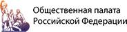
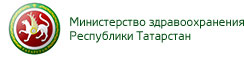
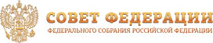
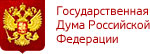

Регистрация
Размер организационного взноса зависит от типа участника и даты взноса.
До конца события осталось
6 дней Не забудьте сделать то-тоДо конца события осталось
7 дней Не забудьте сделать то-тоДо конца события осталось
8 дней Не забудьте сделать то-то| В пакет участников входят | Родители и члены семьи |
Специалисты и ученые |
Студенты и аспиранты |
|---|---|---|---|
| Программа конгресса | |||
| Бейдж с пропуском на научные симпозиумы, выставку, блокнот, другая атрибутика Конгресса | |||
| Сборник статей и аннотаций | |||
| Публикация (статьи — для ученых, аннотаций — для ученых и специалистов) или стендовый доклад |
Для родителей и членов семьи взнос включает регистрацию 2-х членов семьи, например, мать и отец ребенка с синдромом Ретта, или бабушка и мать ребенка с синдромом Ретта, т.п.
Для специалистов, ученных, студентов и аспирантов взнос включает регистрацию 1 ученого или специалиста.
Оплата взноса
| Срок оплаты | Родители и члены семьи |
Специалисты и ученые |
Студенты и аспиранты |
|---|---|---|---|
| До 17 декабря 2015 | 8 000 | 16 000 | 4 000 |
| До 17 апреля | 9 000 | 18 000 | 4 500 |
| С 18 апреля по 1 мая | 10 000 | 20 000 | 5 000 |
| С 1 мая и в течение Конгресса | 12 000 | 24 000 | 6 000 |
| Оплатить | Оплатить | Оплатить |
Участники организационного комитета и научного комитета, приглашенные спикры освобождаются от взноса.
Если гости оплатили взнос, но не приехали, только 50% от взноса возвращается после окончания конгресса.
Не знаете, как происходит оплата?
Можно написать, что лучший вариант взноса — перевод напрямую на счет в Сбербанке и дать реквизиты ниже. И прямо объяснить, что так наша Ассоциация получит больше денег, которые пойдут на полезные дела в России, Узбекистане, Казахстане, Молдавии и других странах.
Ученым и специалистам
Подача статьи не привязана к взносу. Вы можете оплатить взнос до и после подачи статьи. При подаче статьи должны быть заполнены все поля в соответствующей форме. Все передаваемые файлы, перечень которых указан в правилах для авторов, должны быть названы только латинскими буквами или цифрами и упакованы в один архив.
Прислать статьюОрганизаторы
АНО «Ассоциация синдрома Ретта» зарегистрирована в Казани в 2011 году, но начала свою деятельность раньше. Сначала это были два, потом три ребенка. К 2011 году мы помогали 27-ми детям. Сейчас в Ассоциации 153 ребенка с этим редким генетическим заболеванием. Мы помогаем детям в России, Армении, Беларуси, Украине, Таджикистане, Узбекистане, Казахстане, Молдавии.

Тимуца Ольга Вадимовна
Директор Ассоциации содействия больным синдромом Ретта
rettsyndrome@mail.ruГости
На Конгресс приглашены представители Совета Федерации, осударственной Думы РФ, члены Общественной палаты РФ, специалисты Министерства здравоохранения, других профильных министерств, пациентских организаций, ученые и специалисты, родителей детей с синдромом Ретта, все заинтересованные граждане.
   